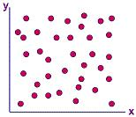
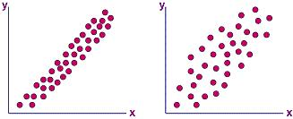
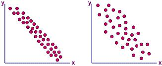

|
Scatter
Diagram
The
Scatter Diagram
is a tool for determining the potential correlation between two
different sets of variables, i.e., how one variable changes with the
other variable.
This diagram simply plots pairs of corresponding
data from two variables, which are usually two variables in a process
being studied. The scatter diagram does not determine the exact
relationship between the two variables, but it does indicate whether
they are correlated or not. It, by itself, also does not predict
cause and effect relationships between these variables.
The scatter diagram is used to: 1) quickly confirm a hypothesis that two
variables are correlated; 2) provide a graphical representation of
the strength of the relationship between two variables; and 3) serve as
a follow-up step to a cause-effect analysis to establish whether a
change in an identified cause can indeed produce a change in its
identified effect.
To make a scatter diagram
for two variables requiring confirmation of correlation, the following
simple steps are usually followed:
1) collect 50-100 pairs of data for the two
variables and tabulate them;
2) draw the x- and y-axes of the diagram, along with
the scales that increase to the right for the x-axis and upward for the
y-axis;
3) assign the
data for one variable to the x-axis (the independent variable) and the
data for the other variable to the y-axis (the independent variable);
4) plot the data pairs on the scatter diagram, encircling (as
many times as necessary) all data points that are repeated.
Interpretation of the resulting scatter diagram is as simple as looking
at the pattern formed by the points. If the data points plotted
on the scatter diagram are all over the place with no discernible
pattern whatsoever, then there is
no correlation
at all between the two variables of the scatter diagram. An
example of a scatter diagram that shows no correlation is shown in
Figure 1.

Figure 1.
A Scatter Diagram showing no correlation
There is
positive correlation
between two sets of data if an increase in the x-value results in an
increase in the y-value. Figure 2a shows a scatter diagram that exhibits positive correlation. Note that in such a correlation, the data points constitute a perceivable diagonal line that
goes from the lower left to the upper right corner.
Not
all sets of data pairs will exhibit a strong positive correlation, even
if an increase in the x-value somehow results generally in an increase
in the y-value. An example of this 'weak' type of positive
correlation is shown in the scatter diagram of Figure 2b, which is said
to exhibit just a
'possible
positive correlation.'
This
scatter diagram still shows a perceivable diagonal line going in the
upper right direction, but the points are more spread apart than in a
scatter diagram with strong positive correlation.

Figure 2.
Scatter Diagrams showing positive correlation (a, left) and
just a possible positive
correlation (b, right)
If the scatter diagram
formed also shows a perceivable diagonal line, but the line is going
in a direction opposite that of positive correlation (i.e., from the upper left to the lower right corner) as shown in Figure 3a,
then the data pairs are exhibiting
negative correlation. This
means that y decreases as x increases.
Again, the negative correlation is strong if the line formed by the data
points is narrow and very defined.
If the negative correlation
is not strong, resulting in data points that are not closely packed
together, then there is just a
'possible negative
correlation.'
An
example of a scatter diagram for such type of correlation is shown in
Figure 3b.

Figure 3.
Scatter Diagrams showing negative correlation (a, left) and
just a possible negative
correlation (b, right)
Of course, more complex
types of correlation may also be identified using a scatter diagram.
Once a type of correlation is established, the engineer may choose
to proceed with a further and more in-depth investigation of the
correlation using other analysis tools.
Determining the exact nature
of correlation between variables can lead to benefits. These
include: 1) better understanding of cause-effect relationships; 2)
reduction of data gathering requirements; 3) establishment of more
effective process controls; 4) easier development of check and balance
schemes; etc. To realize these benefits, however, the engineer has
to use other analytical tools to complement the scatter diagram, since
the latter is only used as a quick visual check for possible correlation before
a more in-depth study is undertaken.
See Also:
Matrix Diagram; Ishikawa Diagram
HOME
Copyright
©
2004-2005
EESemi.com.
All Rights Reserved.
|